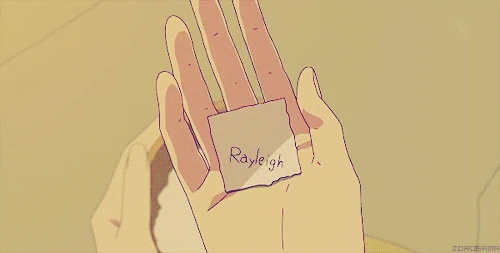

week 1: intro
website design + final project proposals
project objective
this week, our objective was to create a course website and explore project ideas. i had fun with creating and messing around with this website, which is based off a template from html5up.
final project proposals
-
one piece vivre card:
in the anime one piece, a vivre card is a paper tied to a person’s life force. when the card is torn and the pieces are distributed to different people, each fragment guides its holder toward the original person regardless of obstacles or distance. a final project option is to create a real-life version of the vivre card using bluetooth. two halves of a card would detect and move toward each other by attaching small wheels or moving devices.
alternatively, this concept could be adapted into a compass, where the needle always points to the other compass.
-
dynamic chess board:
design a chessboard where each square is an independent, movable piece that can shift up and down. this will be a challenging art installation with mechanical design and an electronics control system.
-
WALL-E plant watering robot:
design a self-watering plant robot that is inspired by WALL-E.